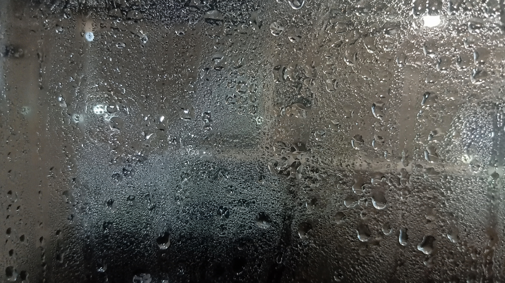

← BACK TO DOSSIERS LIST
REALISM CASE FILE // TREND: THE LEXICON SHIFT: REPLACING ADJECTIVES WITH PHYSICS IN AI ART
Photo-Realism Study: Condensation on Cold Glass Through the Five Layers of Camera-Grade Reality
DATE: 2026-07-26
STATUS: CALIBRATED_REALISM
ENGINE: CHATGPT DALL-E 3

SPECIMEN IMAGE #16:9 - CLEAN OPTICS
Images of condensation often fall into the same visual trap as many AI-generated photographs: perfectly spaced droplets, flawless reflections, and polished surfaces that rarely exist in real environments. Actual condensation is messy. Droplets form unevenly, merge unpredictably, and interact with microscopic contaminants on the glass. Camera-grade realism begins when these imperfections are treated as primary information rather than defects.
To understand why believable condensation looks different from generic AI imagery, we need to examine the scene through five layers of reality: subject, environment, physics, time, and camera behavior. Each layer contributes evidence that the image was observed rather than designed. Yet the most important factor is not hidden in the pixels. The real breakthrough comes from language itself. The calibration console at the end of the dossier reveals how specific lexicon shifts alter the behavior of generated imagery long before rendering begins.
The lexicon shift process replaces abstract aesthetic language with physical descriptions. Terms such as "perfect water droplets" are transformed into descriptions of condensation dynamics, surface tension, and environmental variability. Likewise, "cinematic lighting" becomes measurable illumination behavior involving practical light sources, highlight rolloff, and shadow contamination. Calibration quality increases when prompts describe physical mechanisms, optical limitations, and environmental entropy rather than visual ideals. This approach improves realism fidelity because the image model receives instructions tied to observable phenomena instead of stylistic shortcuts.
Returning to the original problem, repetitive AI aesthetics emerge when language prioritizes perfection over observation. Condensation on cold glass becomes convincing when moisture, optics, lighting, and material behavior are described as interconnected systems. The same methodology is expanded throughout the ALPHA REALISM framework, where realism is treated as evidence rather than style. For creators seeking deeper calibration methods, film-style prompt structures, and camera-grade simulation workflows, the ALPHA REALISM Guide provides a comprehensive reference built around physical plausibility, observational fidelity, and controlled lexicon transformation.
The 5 Layers of Reality Applied
Subject:
Close-up view of water droplets condensing on a cold glass surface, with irregular droplet sizes, partial merging between neighboring droplets, uneven spacing, subtle transparency variation, and naturally occurring surface tension patterns. No geometric repetition, no idealized symmetry, and no artificially uniform droplet distribution.
Environment:
Soft overhead illumination diffused through an ordinary indoor environment. Uneven highlight intensity across the glass surface, gradual luminance falloff toward the edges, weak reflected shapes from surrounding objects, subtle shadow contamination from environmental structures, and realistic exposure variation caused by practical lighting conditions.
Physics:
Condensation formed by temperature difference between humid air and a chilled glass surface. Surface tension creates rounded droplets of varying diameter. Gravity causes larger droplets to elongate slightly and produce faint downward trails. Reflections distort through curved water surfaces while microscopic moisture films create localized diffusion and highlight bloom.
Time:
Early-stage condensation with freshly formed droplets coexisting beside larger accumulated beads. Small traces of moisture merging are visible. Slight residue patterns and faint mineral marks remain from previous drying cycles. Surface cleanliness is imperfect, showing subtle dust accumulation and ordinary environmental use.
Camera:
Macro-style close-up captured with a consumer-grade camera or modern smartphone. Mild edge softness, realistic focus falloff, shallow but non-cinematic depth behavior, subtle sensor noise in darker regions, slight compression artifacts in smooth gradients, ordinary optical rendering, and natural highlight clipping on the brightest reflections.
The Lexicon Shift Table
| Appearance (Dead Adjective) |
|
Living Event (Cause & Effect) |
| perfect water droplets |
➔ |
irregular condensation droplets showing natural size variation and partial merging |
| cinematic lighting |
➔ |
soft overhead practical illumination with uneven highlight distribution |
| ultra sharp macro |
➔ |
localized focus retention with gradual optical softness away from the focal plane |
| crystal clear glass |
➔ |
glass surface showing subtle residue marks, dust traces, and moisture contamination |
| hyper detailed reflections |
➔ |
distorted reflections refracted through curved droplets and uneven moisture films |
| perfect composition |
➔ |
observational close-up framing focused on physical condensation behavior |
Calibration Prompt Console
SUBJECT LAYER: close-up observation of water droplets condensing on a cold glass surface, irregular droplet distribution, varying droplet diameters, partial droplet merging, realistic surface tension behavior, transparent water structures, naturally occurring condensation patterns, no geometric repetition, no decorative arrangement. ENVIRONMENT LAYER: soft overhead practical indoor light, uneven highlight intensity, realistic luminance falloff, weak environmental reflections, subtle shadow contamination, ordinary indoor atmosphere, non-studio illumination. PHYSICS LAYER: humidity interacting with chilled glass, gravity affecting larger droplets, faint downward moisture trails, curved water surfaces refracting reflections, microscopic moisture film diffusion, physically plausible condensation formation. TIME LAYER: fresh condensation mixed with accumulated droplets, subtle residue traces from previous drying cycles, faint dust particles, ordinary environmental wear, imperfect cleanliness, naturally aged surface behavior. CAMERA LAYER: consumer-grade macro capture, realistic focus falloff, slight edge softness, shallow but natural depth behavior, mild sensor noise, subtle compression artifacts, ordinary optical imperfections, realistic highlight clipping, non-cinematic rendering, documentary realism, observational photography, physically plausible moisture behavior --ar 16:9
Do you want to generate precise AI images?
Unlock our alpha realism blueprint, physical reliable framework to get the best of your creations with the ALPHA REALISM Guide.
Download Ebook Now